Free
computer Tutorials
|
Free
computer Tutorials
|
|
 home home |
|
|||||
Microsoft Word 2007 to 2010Headers and Section BreaksInserting different headers into different section can be a bit tricky. Before we begin then, don't forget the Undo feature in Microsoft Word. The Undo icon is at the very top of Word, on the Quick Access Toolbar, which is just to the right of the round Office button in Word 2007: 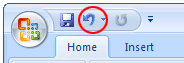 There's no Office button in Word 2010, but the Undo icon is still on the Quick Access Toolbar: In both versions, you can click the little arrow to reveal a dropdown menu. This allows you to undo several steps at once: 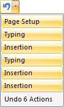 With that in mind, let's add some headers to our booklet.
Click anywhere on your cover page to move your cursor into section 1. Now select the Insert tab at the top of Word. Locate the Header & Footer panel. Click on Header, then the Edit Header item from the menu: 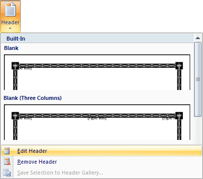 When you click on Edit Header, you'll jump to the Header section on the cover page: 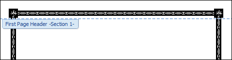 Notice, too, that a new tab appears at the top of Word, the Design tab. Locate the Navigation panel, and click Next Section (just Next and Previous in Word 2010): 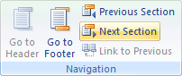 When you click Next Section, you cursor will jump to the header on the second page, which is Section 2: 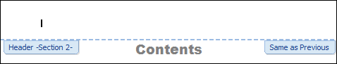 Again, click Next Section on the Navigation panel, as we don't want a header on the contents page. Your cursor will jump to page 3, which is Section 3: 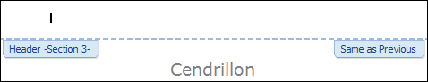 Notice that it says "Same as Previous" on the right of the header. This means the same formatting as the header in the previous section. We don't want this. So have a look at the Navigation panel and you'll see that "Link to Previous" is lit up: 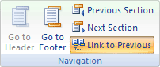 Click this button to deselect. We want different headers on the odd and even pages, so locate the Options panel (to the right of the Navigation panel). Select the item "Different Odd & Even Pages": 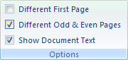 The Header on page 3 will then look like this: 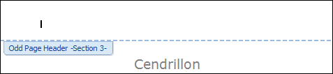 We don't want any header on pages that have a title, so click the Next Section item on the Navigation panel. This will jump you to page 4 of your document: 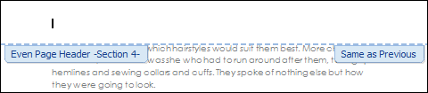 Again, Same as Previous is showing on the right of the header. We want a new header here, so deselect Link to Previous on the Navigation panel. (It's important to do this before typing anything into the header, otherwise you'll have text in headers where you don't want it.) Now type the words Fairy Tales into the header: 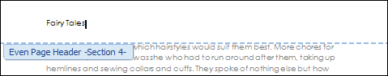 The text Fairy Tales will now appear on all the even pages of your document. Click the Next Section button in the Navigation panel to jump to the Odd Page Header: 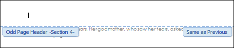 Again, we don't want Same as Previous, so deselect Link to Previous in the Navigation panel. We'll right-align the headers in the odd page section. To do that, locate the Position panel: 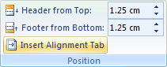 Click the Insert Alignment Tab to see the following dialogue box: 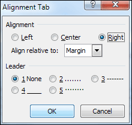 Select Right, and click OK. Now type the name of the story, which is Cendrillon: 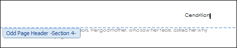 As you can see, the text in the header is now right-aligned. Click the Next Section button on the Navigation panel to jump to your second story, Little Red Riding Hood: The problem here is that it has the title Cendrillon in the header. To solve the problem, deselect Link to Previous in the Navigation panel. Now delete the text Cendrillon. Again, we don't want any header on this page because it is one with a story title. So click the Next Section button. Your cursor will be flashing at the start of Fairy Tales on the next page. This is OK the way it is, so click Next Section again. Deselect Link to Previous again. Now repeat the process for right-alignment, and then type Little Red Riding Hood. Your header will then look like this: 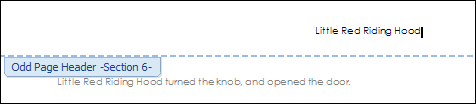 Click inside the Header on the page where your Puss in Boots title is. Deselect Link to Previous. Delete all the text from this header. Click Next Section twice and then, again, deselect Link to Previous. Right-align, and type Puss in Boots. Click Next Section and your cursor should be flashing in the header where you have your The Ant and Grasshopper title. It will say "Fairy Tales". We don't want this, so deselect Link to Previous. Now delete the text. Click the Next Section button again, and your cursor will be flashing in the header where you have your The Crow and Fox title. Deselect Link to Previous and delete the text Puss in Boots. Congratulations - you're done! Click the Close button to return to normal: 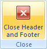 To view all your hard work, click the round Office button at the top of Word (Word 2007 users only). From the menu, select Print > Print Preview. Word 2010 users should click the File tab, and then Print. Your first three pages should look like this: 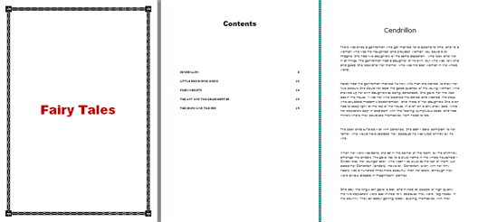 The next two pages should look like this: 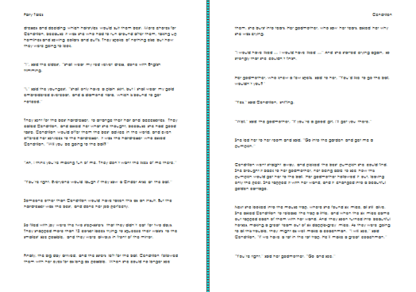 Notice that we have the different headers on different sides of the page. Use the scroll bars to view the rest of your document. If everything went well, then the final three pages should look like this: 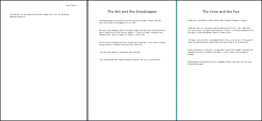 The final two pages should have no headers in them.
In the next section, you'll design a logo using Word Shapes. <--Back to the Word Contents Page View all our Home Study Computer Courses
|
||||||
|